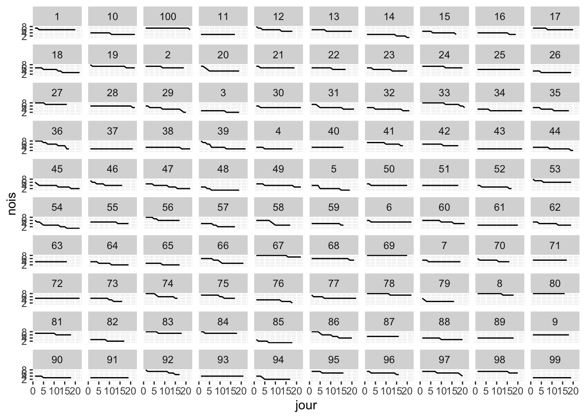
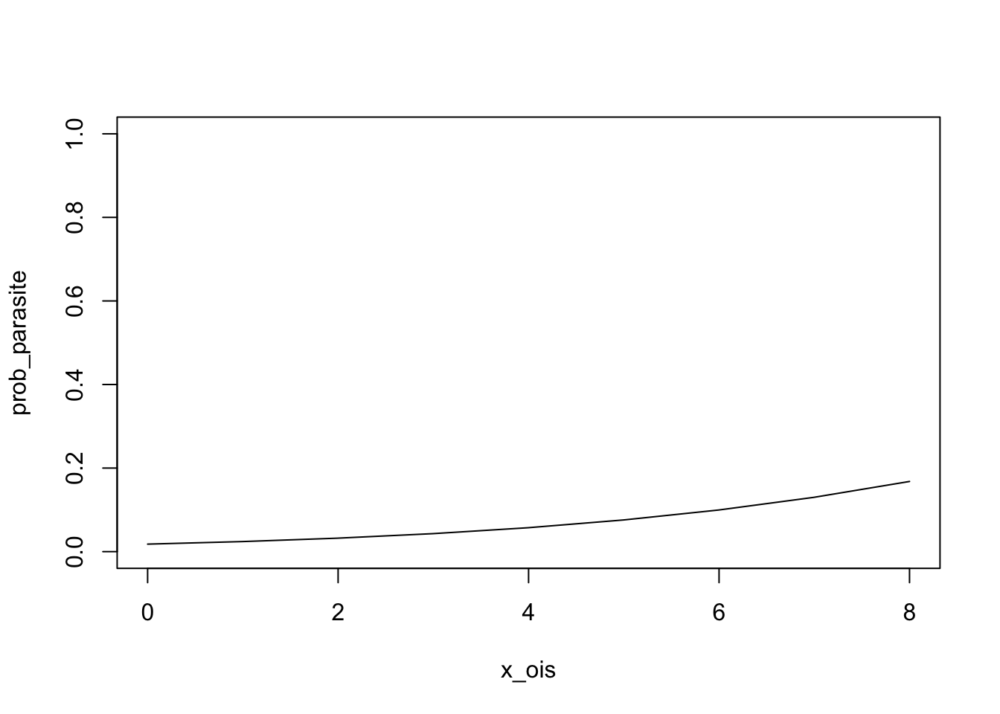
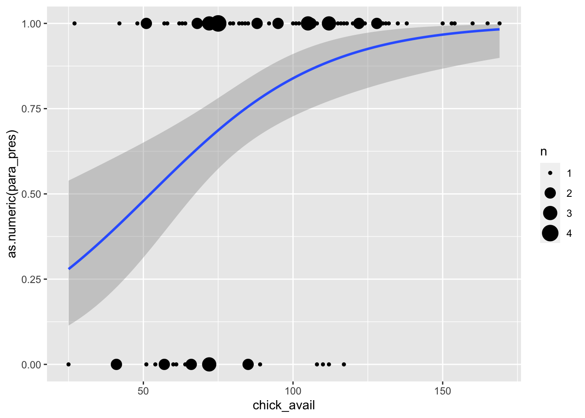

library(targets)
library(ggplot2)
library(tidyverse)
library(tidybayes)Calculating GDDs but its baby birds getting eaten alive by maggots
ois_list <- rerun(100, {
taille_couvee <- sample(3:8, 1)
pr_surv_ois <- 0.98
temps_nid <- sample(16:22, 1)
n_ois <- numeric(temps_nid)
n_ois[1] <- taille_couvee
for(t in 2:temps_nid){
n_ois[t] <- rbinom(1, n_ois[t-1], prob = pr_surv_ois)
}
n_ois
})assumption: nestling survival is independent of parasitism (its an hypothesis later) – can exaggerate stresses.
ois_df <- ois_list |>
map_df(~ tibble(nois = ., jour = 1:length(.)), .id = "nid_id")
ois_df |>
ggplot(aes(x = jour, y = nois, group = nid_id)) + geom_line() + facet_wrap(~nid_id)
parasites
ois_df |> filter(nid_id ==1) |> as.data.frame() nid_id nois jour
1 1 7 1
2 1 7 2
3 1 6 3
4 1 6 4
5 1 6 5
6 1 6 6
7 1 6 7
8 1 6 8
9 1 6 9
10 1 6 10
11 1 6 11
12 1 6 12
13 1 6 13
14 1 6 14
15 1 6 15
16 1 6 16
17 1 6 17
18 1 6 18
19 1 6 19
20 1 6 20What is the relationship between number of chicks and prob of parasites??
x_ois <- 0:8
avg_logit <- -4
slope_logit <- .3
prob_parasite <- exp(avg_logit + slope_logit * x_ois)/(1 + exp(avg_logit + slope_logit*x_ois))
plot(x_ois, prob_parasite, type = "l", ylim = c(0, 1))
chance of getting a parasite every day
ois_para_df <- ois_df |>
mutate(probab_para = exp(avg_logit + slope_logit*nois)/(1 + exp(avg_logit + slope_logit*nois)),
actual_para = rbinom(length(probab_para), 1, prob = probab_para)
)assuming that parasitized nests can get MORE parasites
parasites need to arrive like 4 days before fledging to survive and get counted
parasite_results <- ois_para_df |>
mutate(parasites_safe = (jour <= (max(jour) - 4)) & nois>0) |>
group_by(nid_id) |>
summarise(chick_avail = sum(nois),
para_pres = sum(actual_para * parasites_safe)>0)parasite_results |>
ggplot(aes(x = chick_avail, y = as.numeric(para_pres))) + geom_count() +
stat_smooth(method = glm, method.args = list(family = "binomial"))`geom_smooth()` using formula = 'y ~ x'
next steps, * make a shiny app? things to change:
- variation over the time over different ages – older chicks die less, and are less attractive to parasites
particularly interesting is the relationship btween the attractiveness of chicks is ther ea way to make a logistic curve or another curve pounded by 0 and 1, that starts at 0 at a known amount? I think the modified logistic was kind of like that
I need ot read more actualy papers, I’m getting inward looking and dumb
let me start with the papers of the scientists that I am wlorking with – i’ll read all of Matt’s papers, and then all of the papers - or the most recent papers - of the scientists in McGill and udes.
But this is only a part of the story. we’ve shown that at least some of the increasting chick-days
hm could you also use a type 2 predator response? something with a diminshing return for the number of eggs in a nest? I imagine that mahy of these insect species area actually tracking the number of indiviaul, to a total above 8, since they propbably also atack birds with bigger clutch sizes
ohh what about biomass,, are they flies atually attracted to THAT – and what is the relationhsip between biomass and density in chicks? do chicks die as the nest gets crowded? probably not, but I nw that happens sometimes.
in general, do people relate growth, onteogeny, self thinning to colonization rates?
and how do we think about indicence when the area gets bigger, anyway?